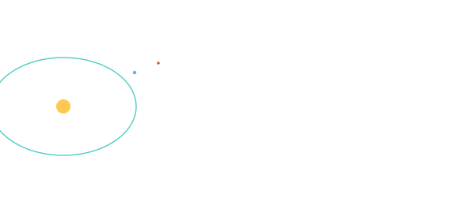

SCALES & TIME

101 · zoom in
Scales & Time — none of this is Earth-sized, and it's all happening on a slow clock.
The solar system is bigger than your intuition is calibrated for. Mars is 200 million km away. Saturn is 1.4 billion. Pluto is 6 billion. Numbers in kilometres stop helping. So astronomers picked a more human ruler — one Earth-Sun distance, called the astronomical unit (AU). Mars is 1.5 AU. Jupiter is 5. Pluto orbits between 30 and 50.
Time is the other axis you have to recalibrate. A signal from Earth takes 4 to 22 minutes to reach Mars. There is no way to joystick a Mars rover from Earth — every important manoeuvre has to be autonomous, because by the time you find out it failed, it's been failing for an hour. Mars launch windows only open every 26 months. If you miss one, you wait two years.
Six sections here. AU and light-minute give you the rulers. J2000 is the universal calendar zero astronomers all agree on. Sidereal vs synodic explains why Mars windows recur every 26 months, not 23. The ecliptic plane is the flat disc the planets all (mostly) lie on. Reference frames is the bookkeeping for switching between Sun-centred, Earth-centred, and body-centred views — which mission control juggles constantly.
→ Pick a section from the right rail to start reading.